Overview
Skins provide the visual appearance of the ProcessMaker interface. By default, ProcessMaker 3.0 provides the neoclassic and classic skin for a standard blue/grey interface. New skins can be manually created to customize the appearance of ProcessMaker.
User Permissions
The user must have the PM_SETUP_SKIN permission assigned to their role to access the Admin > Settings > Skins tab.
Applying a Skin
By default, the neoclassic skin is applied when ProcessMaker is installed. To change this skin, go to Admin > Settings > Skins and select a different skin from the list of all the available skins.
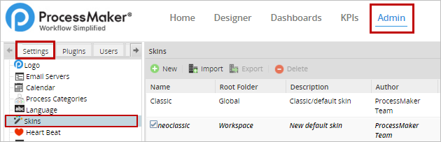
When a skin is changed, it will be visible ONLY in the current browser and workspace where the user applied it.
Available Skins
To see the list of available skins installed in ProcessMaker, go to Admin > Settings > Skins. All available skins created for the current ProcessMaker installation will be listed in this section.
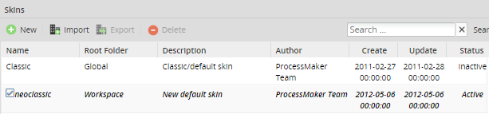
Notice that the skin currently used in the workspace is displayed with italicized and bolded text, and appears with a checked box in its row.
Classic Skin
This skin returns the appearance of ProcessMaker to the classic blue and gray interface. To view this skin simply change the URL to:
http://<IP-ADDRESS>:<PORT>/sys<CURRENT-WORKSPACE>/en/classic/setup/main
For example, the appearance of the ADMIN tab will change to:
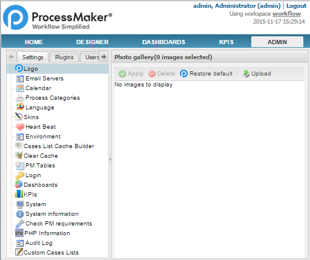
The files that define ProcessMaker's classic skin are located in the following directories:
Linux:
Windows:
Bitnami:
Neoclassic Skin
A new installation of ProcessMaker uses the "neoclassic" skin as the default skin. In addition, the "blank" skin can be used to eliminate the top frame containing the logo and the top-level menu. This skin is designed for production users who only need access to the HOME menu and will be running ProcessMaker on devices with limited screen resolution, such as tablets, netbooks, and some types of smartphones. The raw skin can be used for debugging and devices with limited processing power. It doesn't load all the JavaScript libraries, so not all features will work correctly with the "raw" skin.
For example, the Admin tab will look like this in the "neoclassic" skin:
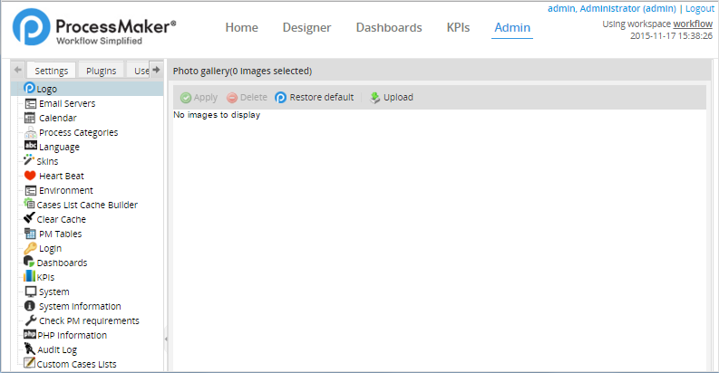
The files defining ProcessMaker's default "neoclassic" skin are located in the following directories:
Linux:
Windows:
Bitnami:
User Experience Skins
The User Experience mobile skin gives users a simplified inbox to work on cases. This skin is specially useful on iPhone, iPad, and Android devices that have limited screen resolution, so that users can access their cases using a web browser on tablets and mobile phones.
To enable this option, go to Admin > Users > User Experience, which will show the list of all the users and groups created in ProcessMaker. There are four types of User Experiences:
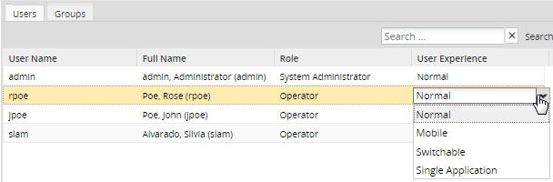
- Normal: ProcessMaker's standard interface.
- Mobile: A simplified interface that only provides access to the Inbox, Drafts and Unassigned case folders. The cases are listed with less information: the title and number of the case, the assigned user, the due date of the current task, the name of the step, and the name of the process.
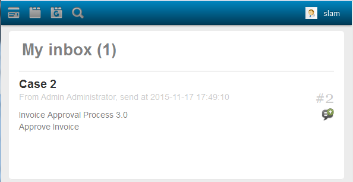
Users can only see cases that require further action on their part. By clicking on the name of the Dynaform, the next step will be displayed, allowing users to continue the case. For more information, see User Experience.
- Switchable: Allows the user to change between the Normal and the Mobile skins.
- Single Application: A simplified interface that lists the steps in the current task in tabs at the top of the screen.

Error Skins
When a URL is incorrectly entered, an error page is displayed in a special skin to inform users about problems with the content or the server. A screen is shown specifying the error, along with some possible reasons for the error and some resources that might help users identify the problem.
Skin: 404 Not Found
When a URL is entered incorrectly (unless the name of the workspace is incorrect), the following skin will be displayed:
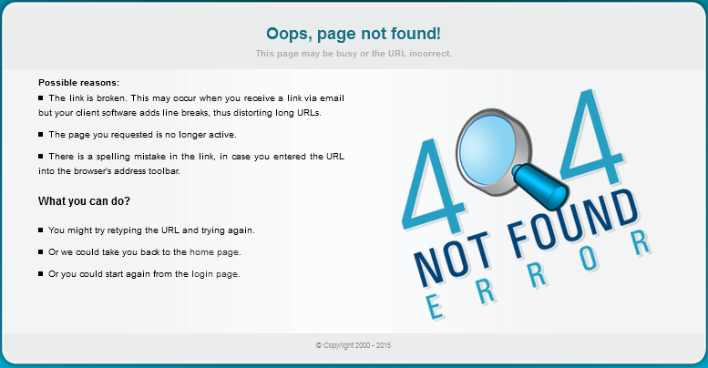
Skin: The Website is Under Construction
If for some reason ProcessMaker is unavailable (upgrade, server down, etc.) users will be redirected to the following page:
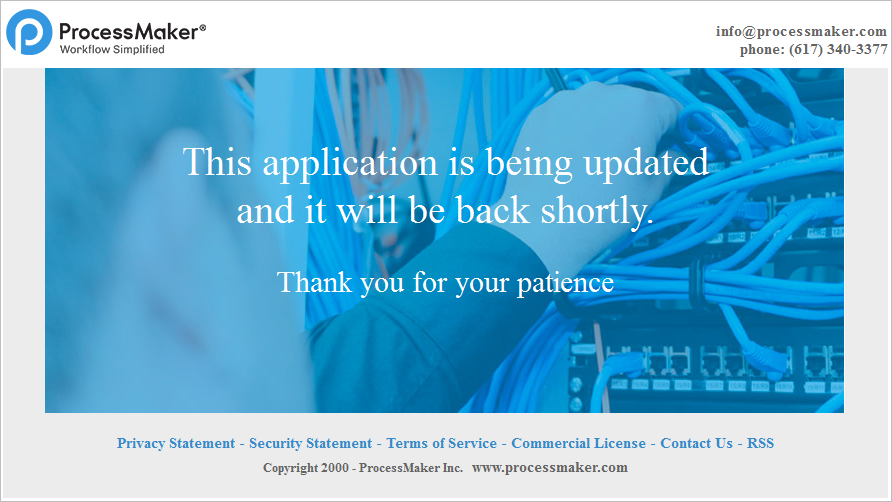
Changing Skins Layout
The 404 Not found and 403 Forbidden Error skins can be changed using the error404.php and updating.php files inside the skin folder. Users can customize these skins according to their requirements using these files.
Although both files have a php extension, most of the content is HTML code, so following the steps below to customize them shouldn't be difficult:
Go to the path where the
error404.phpandupdating.phpfiles are located:Linux:
/opt/processmaker/workflow/engine/skinEngine/neoclassicWindows:
<install-directory>\processmaker\workflow\engine\skinEngine\neoclassicBitnami:
C:\Bitnami\processmaker-3.0.1.8-0\apps\processmaker\htdocs\workflow\engine\skinEngine\neoclassic- Open the
error404.phpfile and modify line 60 from:To:
- Once the line is changed, test it by modifying the server URL. Remember that it is not necessary to restart the server to try these changes.
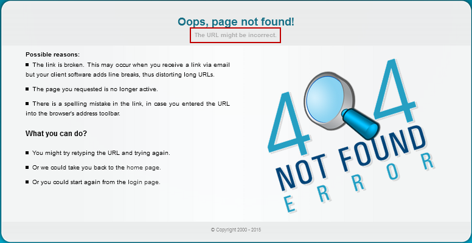
The same changes can be made to the updating.php file.
Changing the Skin
To change the default skin in ProcessMaker in the System settings, go to Admin > Settings > System > Preferences and click on the down arrow to view the list of available skins. After selecting a skin, save it by clicking on the Save settings button at the bottom of the page.
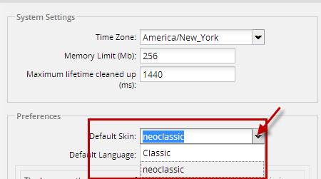
A dialog box will appear:
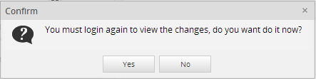
In the bottom left corner of the screen, another box will appear informing the user that the changes have been saved:

Click on Yes and log in again to refresh the skin.
Creating Skins
New skins can be added using either the ProcessMaker interface or by manually creating them inside the file system.
Creating Skins Using the ProcessMaker Interface
To create a new skin using the ProcessMaker interface, go to Admin > Settings > Skins and click on the New button.
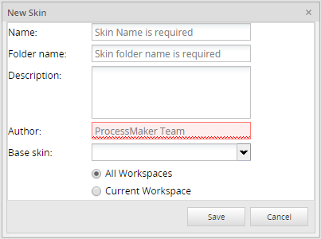
Where:
- Name: (Required) Name of the new skin.
- Folder Name: (Required) Name of the folder where all the skin files will be located. The folder name is automatically generated using the name of the skin created, but it is possible to change it. However, if the skin will be edited in the future, it is recommended to keep the same name.
- Description: (Optional) Enter a brief description of the skin.
- Author: (Required) Name of the author of the skin
- Base skin: (Required) List of all available skins. One of them must be chosen as a base for the creation of the new skin.
When a new skin is created, it can be used either by the current workspace where it was created, or by all workspaces created on the server where ProcessMaker has been installed. If users want to configure more than one skin for each workspace, they have to modify
config.xmlmanually. Please refer to this documentation for a more detailed explanation. At the bottom of the window, where the skins are created, there are two options to determine the availability of the skin:- All workspaces: The skin will be available in all workspaces created on the current server where ProcessMaker has been installed.
- Current workspace: The skin will be available ONLY for the current workspace in use.
Once the information is completed, click on the Save button to create the new skin.
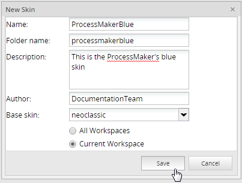
The skin will be created in the following location:
Linux:
Windows:
Bitnami:
Creating Skins Manually
New skins can also be added to ProcessMaker by manually adding them inside the file system.
The files defining ProcessMaker's default neoclassic skin are located in the directory:
Linux:
Windows:
Bitnami:
To create a new skin, first create a new directory named skins inside the shared directory.
Linux/UNIX:
Create the skins directory and then set it to use the 770 permission. Change its owner and group to the apache user (which is apache:apache in Red Hat/CentOS/Fedora, www-data:www-data in Debian/Ubuntu/Mint, and www-run:www in SUSE/OpenSUSE).
chmod 770 /opt/processmaker/shared/skins
chown apache-user:apache-group /opt/processmaker/shared/skins
Windows:
Open the Windows File Manager, and navigate to the <install-directory>/processmaker/shared directory. Right click in the directory and select New > Folder from the menu, and then name the new folder "skins".
Bitnami:
Open the Windows File Manager, and navigate to the C:\Bitnami\processmaker-3.0.1.8-0\apps\processmaker\htdocs\shared directory. Right click in the directory and select New > Folder from the menu, and then name the new folder "skins".
After creating the skins directory, copy the default skin's neoclassic directory to it and rename it with the name of the new skin. For example, to create a skin named "green":
Linux/UNIX:
Windows:
In the Windows File Manager, copy the <install-directory>\processmaker\workflow\engine\skinEngine\neoclassic directory and paste it inside the <install-directory>\processmaker\shared directory. Right click on the name of the folder and select the Rename option. Rename the neoclassic directory to "green".
Bitnami:
In the Windows File Manager, copy the C:\Bitnami\processmaker-3.0.1.8-0\apps\processmaker\htdocs\workflow\engine\skinEngine\neoclassic directory and paste it inside the C:\Bitnami\processmaker-3.0.1.8-0\apps\processmaker\htdocs\shared directory. Right click on the name of the folder and select the Rename option. Rename the neoclassic directory to "green".
Remember that skin names are case sensitive, so a skin directory named "GreeN" is different from "green".
Skins have a file structure like the one shown below:
ProcessMaker can now use the new skin files, but it a good idea to edit the information displayed about the skin in the skin list. Open the shared/skins/green/config.xml file with a plain text editor and edit the values for the <id>, <name>, <description>, <author>, <version>, <createDate> and <modifiedDate> in the <information> section.
For example:
<skinConfiguration>
<information>
<id>00000000000000000000000000000004</id>
<name>Green</name>
<description>Custom Green skin</description>
<author>Travis Grady</author>
<version>1.0</version>
<createDate>2017-01-06</createDate>
<modifiedDate>2017-01-06</modifiedDate>
</information>
The <id> can be any numeric value that is different from 00000000000000000000000000000001 and 00000000000000000000000000000002, which are used by the classic and neoclassic skins, respectively.
The config.xml file can also be edited to use different CSS files in the skin.
Now, log in to ProcessMaker, go to Admin > Settings > Skins, and the Green skin will be listed in the window.
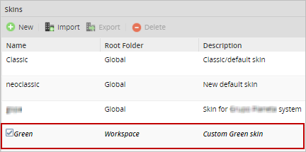
If applied now, this skin will be the same as the neoclassic skin. Edit the style.css file to modify the skin's appearance.
Importing and Exporting Skins
By clicking on the Import option above the list of skins, a skin created in a different installation or ProcessMaker server can be imported. The file to be imported has to have the .tar extension.
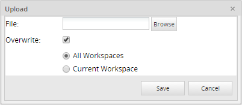
After choosing a skin from the list and clicking on the Export option, the skin will be exported in a file with a .tar extension.
Removing Skins
To remove a skin, simply delete the skin's directory found in shared/skins/skin-name. For example, to remove the Green skin in Linux/UNIX:
To remove a skin using the ProcessMaker interface, click on the Delete button.
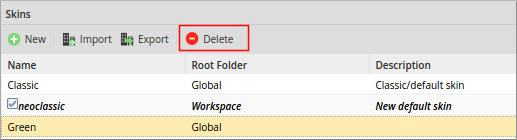
Note: The classic and neoclassic skins can not be deleted, since they are default skins in ProcessMaker.
Modifying Skins
To modify a ProcessMaker skin, edit the skin's HTML and CSS files found in the shared/skins/skin-name directory. Custom image files can also be added to the shared/skins/skin-name/images directory.
HTML Skin Files
The HTML files control the layout and content of a skin. The principal file to edit is layout.html, which is the general layout of the principal ProcessMaker interface.
Variables to be inserted in the HTML code are enclosed inside of {} (curly braces), such as {$rolename} and {$workspace}. PHP code is enclosed inside of {php}...{/php} tags. To conditionally insert HTML code, either use print statements in PHP code or encode HTML inside of PHP code blocks.
For example, the following code in an HTML file prints out "ADMIN privileges" if the logged in user is the admin user:
print "<big><b>ADMIN privileges</b></big><br>";
}else{
print "<big><b>Normal privileges</b></big><br>";
}
{/php}
Any text outside {php}...{/php} tags is considered HTML and will be displayed in the web browser. The same message can be inserted into the HTML code in this manner:
<big><b>ADMIN privileges</b></big><br>
{php}}else{{/php}
<big><b>Normal privileges</b></big><br>
{php}}{/php}
CSS Skin Files
Cascading Style Sheets (CSS) define the appearance of elements in ProcessMaker. The CSS files for the default neoclassic skin are located in the following directories:
Linux:
Windows:
Bitnami:
However, it is not recommended to directly edit these CSS files, because upgrading ProcessMaker will overwrite these files and any changes will be lost. Instead, create a custom skin using the ProcessMaker interface and edit its CSS files.
A new skin created with the ProcessMaker interface will include the following CSS files by default:
- css/form.css: Defines styles used by form elements in ProcessMaker.
- css/loginStyle.css: Defines the styles used on the Login screen.
- css/pmos-xtheme-gray.css: Defines the custom ProcessMaker styles for elements using the ExtJS library. Note that these styles are used in most of the ProcessMaker interface, but are are not used by Dynaforms.
- css/rtl.css: Defines styles for right-to-left languages, such as Arabic and Hebrew.
- css/sprite.css: Sets the sprites for all other web browsers.
- css/sprite_ie7.css: Sets the sprites (i.e., images that change depending on the state of element) for Internet Explorer 7.
- css/style.css: Defines the fonts used by ProcessMaker and sets the colors, spacing and other properties of basic elements in the ProcessMaker interface.
- css/xtheme-gray.css: Defines the standard gray theme used by the ExtJS library, which is used by most of the ProcessMaker interface (case lists in Home, configuration options in Admin, etc.), but is not used by Dynaforms.
Edit these files with a plain text editor to modify the appearance of the skin. After changing the CSS file of a skin, clear the web browser's cache and then reload ProcessMaker by pressing CTRL+F5 or CTRL+SHIFT+r to see the updated CSS file.
Note: To use other CSS files for the skin, the files must be included with the config.xml file.
Modifiable ProcessMaker Sections
In ProcessMaker 3, the following sections can be modified using skins:
Header (Logo, Main Menu Options)
- The logo
- The font attributes (color and size)
- The background color
- Customized CSS
Home Tab (Execution)
- The font attributes (color and size)
- The background color
- Customized CSS
Designer Tab
- The font attributes (color and size)
- The background color
- Customized CSS
Dashboard/KPI Tab
- The font attributes (color and size)
- The background color
- Customized CSS
Admin Tab
- The font attributes (color and size)
- The background color
- Customized CSS
Forms
- The font attributes (color and size)
- The background color
- The color of the buttons
- Customized CSS
Process Designer
- The font attributes (color and size)
- The background color
- The color of the buttons
- Icon focus background
- Customized CSS
Form Designer
- The font attributes (color and size)
- The background color
- The color of the buttons
- Icon focus background
- Customized CSS
Login
- The font attributes (color and size)
- The background color
- The background image
- The color of the buttons
- The position of the buttons
- Customized CSS
Common ProcessMaker Classes
- ProcessMaker header:
- logout: Class for holding information about the logged in user, workspace, date and a Logout link in the upper right hand corner of the ProcessMaker header.
- title: Class for an empty cell immediately below the cell that holds the user information and Logout link.
- ProcessMaker menu:
- mainMenuBG: Class for the row that holds the ProcessMaker main menu.
- mainMenu: Class for an option in the main menu that is not selected.
- SelectedMenu: Class for an option in the main menu that is selected.
Format of the config.xml File
The shared/skins/skin-name/config.xml file defines the properties of a skin and includes the CSS files in the skin. The <information>...</information> section of the config.xml file defines the properties of the skin:
| Sample element | Description |
|---|---|
<?xml version="1.0" encoding="UTF-8"?> |
Character coding should always be UTF-8. |
<skinConfiguration> |
Section that defines the skin. |
<information> |
The information section that defines the properties of the skin. |
<name>corpcolors</name> |
The name of the skin, which is case sensitive. |
<id>45473066758a4c94be25f31042361764</id> |
The ID of the skin, which was randomly generated by ProcessMaker. If creating the skin manually, then set
the ID to 00000000000000000000000000000003 or higher, because 00000000000000000000000000000001 and 00000000000000000000000000000002 are used by the "classic" and "neoclassic" skins,
respectively.
|
<workspace></workspace> |
If the skin will only be used in a particular workspace, then set to the name of the workspace. Otherwise, leave blank so it can be used by any workspace. |
<description>MyCorp skin</description> |
A description of the skin. |
<author>Travis Grady</author> |
The author of the skin. |
<version>1.0</version> |
The version number of the skin. |
<createDate>2017-02-15 16:34:03</createDate> |
The date or datetime when the skin was created. |
<modifiedDate>2017-02-15 16:34:03</modifiedDate> |
The date or datetime when the skin was last modified. |
</information> |
End of the information section. |
Note: To comment out code in an XML file, place it inside <!-- ... --> tags.
The <cssFiles>...</cssFiles> section of the config.xml file defines which CSS files are included for each skin. By default, following files are included in the different skins:
<skin>
<cssFile file="style.css" enabledBrowsers="ALL" disabledBrowsers=""></cssFile>
<cssFile file="form.css" enabledBrowsers="ALL" disabledBrowsers=""></cssFile>
<cssFile file="sprite_ie7.css" enabledBrowsers="ie7" disabledBrowsers="ALL"></cssFile>
<cssFile file="sprite.css" enabledBrowsers="ALL" disabledBrowsers="ie7"></cssFile>
<cssFile file="rtl.css" enabledBrowsers="ALL" disabledBrowsers=""></cssFile>
<cssFile file="loginStyle.css" enabledBrowsers="ALL" disabledBrowsers=""></cssFile>
</skin>
<blank>
<cssFile file="style.css" enabledBrowsers="ALL" disabledBrowsers=""></cssFile>
<cssFile file="form.css" enabledBrowsers="ALL" disabledBrowsers=""></cssFile>
<cssFile file="sprite_ie7.css" enabledBrowsers="ie7" disabledBrowsers="ALL"></cssFile>
<cssFile file="sprite.css" enabledBrowsers="ALL" disabledBrowsers="ie7"></cssFile>
<cssFile file="rtl.css" enabledBrowsers="ALL" disabledBrowsers=""></cssFile>
</blank>
<raw>
</raw>
<submenu>
<cssFile file="style.css" enabledBrowsers="ALL" disabledBrowsers=""></cssFile>
<cssFile file="form.css" enabledBrowsers="ALL" disabledBrowsers=""></cssFile>
<cssFile file="sprite_ie7.css" enabledBrowsers="ie7" disabledBrowsers="ALL"></cssFile>
<cssFile file="sprite.css" enabledBrowsers="ALL" disabledBrowsers="ie7"></cssFile>
<cssFile file="rtl.css" enabledBrowsers="ALL" disabledBrowsers=""></cssFile>
</submenu>
<tracker>
<cssFile file="style.css" enabledBrowsers="ALL" disabledBrowsers=""></cssFile>
<cssFile file="form.css" enabledBrowsers="ALL" disabledBrowsers=""></cssFile>
<cssFile file="sprite_ie7.css" enabledBrowsers="ie7" disabledBrowsers="ALL"></cssFile>
<cssFile file="sprite.css" enabledBrowsers="ALL" disabledBrowsers="ie7"></cssFile>
<cssFile file="rtl.css" enabledBrowsers="ALL" disabledBrowsers=""></cssFile>
</tracker>
<extjs>
<cssFile file="xtheme-gray.css" enabledBrowsers="ALL" disabledBrowsers=""></cssFile>
<cssFile file="pmos-xtheme-gray.css" enabledBrowsers="ALL" disabledBrowsers=""></cssFile>
<cssFile file="sprite_ie7.css" enabledBrowsers="ie7" disabledBrowsers="ALL"></cssFile>
<cssFile file="sprite.css" enabledBrowsers="ALL" disabledBrowsers="ie7"></cssFile>
<cssFile file="rtl.css" enabledBrowsers="ALL" disabledBrowsers=""></cssFile>
</extjs>
</cssFiles>
The files included in the <skin>...</skin> section are the CSS files used by the custom skin. The other skins have specific purposes:
blankis a skin that does not display the ProcessMaker header and menu bar. It is usually used when embedding ProcessMaker inside an iframe in a web page and only wanting to display the contents of the Home menu.rawis a skin used for debugging that doesn't include any styles.submenuis a skin used by submenus, which is a deprecated feature from version 1.X.trackeris a feature used by the case tracker for external users who want to follow the progress of their cases.extjsis a JavaScript library, which is used in most parts of the ProcessMaker interface except Dynaforms. Change its CSS files to alter the appearance of ProcessMaker.
Files are included in a skin using the <cssFile>...</cssFile> tag:
Where:
filenameis the name of a CSS file located in the css directory.browserscan beALLto include all browsers, except those listed indisabledBrowsers, or the name of a specific browser, such asie7.
To include any other files in the different skins, use the <cssFile>...</cssFile> tag. Most of the styles used by Dynaforms are defined in the file:
Linux:
Windows:
Bitnami:
To include this CSS file in a custom skin, copy it to the location:
Linux:
Windows:
Bitnami:
Then, edit it with a plain text editor.
PMDynaform.css defines styles for different screen widths, so Dynaforms can be used on mobile phones, tablets and desktop PCs. When changing the properties of a style, make sure to change the style in all the different screen widths. For example, to change the font-size property in the form-control style, change it in the following sections:
(max-width: 300px)for devices like small screened smartphones.(max-width: 550px) and (min-width: 300px)for devices like smartphones and phablets.(max-width: 980px) and (min-width: 550px)for devices like phablets and tablets.(max-width: 1600px) and (min-width: 980px)for large tablets, most laptops and low resolution monitors.(min-width: 1680px)for high resolution laptop screens and most monitors.
For example, to change the font-size property for laptops and monitors:
.form-control
{ ... font-size: 16px; ... }
}
@media all and (max-width: 1600px) and (min-width: 980px) {
.form-control
{ ... font-size: 16px; ... }
}
When done editing the PMDynaform.css file, edit the config.xml file to include the CSS file of the skin. For example:
<cssFile file="style.css" enabledBrowsers="ALL" disabledBrowsers=""></cssFile>
<cssFile file="form.css" enabledBrowsers="ALL" disabledBrowsers=""></cssFile>
<cssFile file="sprite_ie7.css" enabledBrowsers="ie7" disabledBrowsers="ALL"></cssFile>
<cssFile file="sprite.css" enabledBrowsers="ALL" disabledBrowsers="ie7"></cssFile>
<cssFile file="rtl.css" enabledBrowsers="ALL" disabledBrowsers=""></cssFile>
<cssFile file="loginStyle.css" enabledBrowsers="ALL" disabledBrowsers=""></cssFile>
<!-- added CSS file: -->
<cssFile file="PMDynaform.css" enabledBrowsers="ALL" disabledBrowsers=""></cssFile>
</skin>
Customizing Forms in ProcessMaker 3
To customize the style of Dynaforms using skins in ProcessMaker 3, it is necessary to overwrite the necessary css classes in a separate file and overwrite the existing styles Dynaforms have when rendered. Remember that when setting these files, ALL Dynafrms in the workspace will apply the changes. To customize an individual Dynaform, it is better to use external libraries (read this page to learn how to do it). To overwrite the styles of the Dynaform in the skin, do the following:
After creating a skin (preferably manually), create a new css file in the following directory (name the file "pm3.css", for example).
Linux:
Windows:
Bitnami:
Now open the config.xml file with your favorite text editor. This file is located in the following directory:
Linux:
Windows:
Bitnami:
Add the following in the extjs section:
Now, add the following after the extjs section in the same file:
<cssFile file="pm3.css" enabledBrowsers="ALL" disabledBrowsers=""></cssFile>
</pm3>
The config.xml file should look like the following:
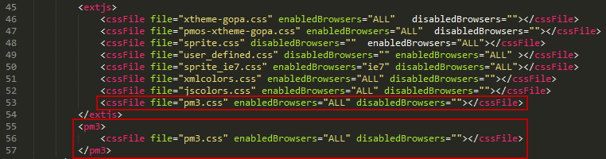
Now that the file has been referenced and added to the skin, it is necessary to add the classes that will be affected by the skin to the CSS file. As mentioned before, for Dynaforms, the classes that manage the styles have to be overwritten in this file. Thus, it is necessary to first identify the class to be overwritten. These styles could be in different files, but the main file containing the styles of the Dynaform is mafe-2564e2b-34cb2a8.css (the suffix code may change depending on the installation), which is in the following directory:
Linux:
Windows:
Bitnami:
See the section below to learn about some of the classes in this file and some of the classes that can be modified for Dynaforms.
Modifying CSS for Specific DynaForm Elements
Editing style.css
As was mentioned before, the most common properties of ProcessMaker are defined in this file, but it is worth mentioning that if the style is changed, all places where the property is used will be modified with the new style.
Below, some examples will be explained:
.userGroupTitle: modifies the case title when a case is running.
To modify the color and font values of the group title:
{
color :#00B0FF;
font :bold 10pt Tahoma,sans-serif,MiscFixed;
padding-left:10px;
}
The final view is:
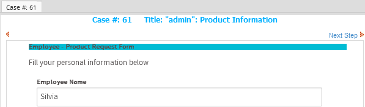
To change the information windows to the figure below, use the following classes:
form.formDefault .FormLabel Changes the labels at the left side of the window.
form.formDefault .FormFieldContent Changes the labels at the right side of the window.
The image above has the following classes:
{
color: #00BCD4;
padding-right: 5px;
text-align: right;
}
form.formDefault .FormFieldContent
{
padding:3px;
text-align: left;
font-size:11px;
background-color: transparent;
color: #607D8B;
/*border: 1px solid #B7B7B7; */
border-collapse: collapse;
}
Editing the Custom CSS File for Dynaforms
Some of the classes that can be overwritten and added to the custom css file that modifies the style of Dynaforms are the following:
.btn-default: modifies the Submit button in all Dynaforms. If using grids, take care to also set a style for the "New" option in the grid (view the style below). Otherwise, both options will be affected by the style.
background-image: -webkit-linear-gradient(top, #033e66, #2980b9);
background-image: -moz-linear-gradient(top, #033e66, #2980b9);
background-image: -ms-linear-gradient(top, #033e66, #2980b9);
background-image: -o-linear-gradient(top, #033e66, #2980b9);
background-image: linear-gradient(to bottom, #033e66, #2980b9);
-webkit-border-radius: 28;
-moz-border-radius: 28;
border-radius: 28px;
font-family: Arial;
color: #ffffff;
font-size: 14px;
padding: 10px 20px 10px 20px;
text-decoration: none;
The final result is the following:
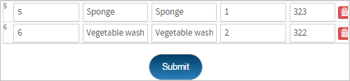
.pmdynaform-grid-newitem.btn-default Modifies the New option of the grid. For example, add the following style:
background-image: -webkit-linear-gradient(top, #053b02, #236b0a);
background-image: -moz-linear-gradient(top, #053b02, #236b0a);
background-image: -ms-linear-gradient(top, #053b02, #236b0a);
background-image: -o-linear-gradient(top, #053b02, #236b0a);
background-image: linear-gradient(to bottom, #053b02, #236b0a);
-webkit-border-radius: 28;
-moz-border-radius: 28;
border-radius: 28px;
font-family: Arial;
color: #ffffff;
font-size: 12px;
padding: 10px 20px 10px 20px;
text-decoration: none;
The final result is the following:
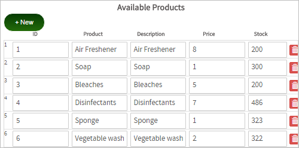
.pmdynaform-label-title: Modifies the titles of Dynaforms. For example:
color: #ffffff;
font-size:24px;
The final result is the following:
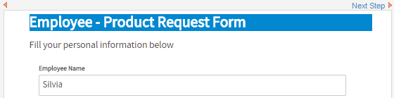
Using Custom Image Files
To change the image file used by a style, place the image file in the following directory:
Linux:
Windows:
Bitnami:
To access any file placed inside the shared/skins/skin-name directory on the ProcessMaker server, use the web URL:
http://<IP-ADDRESS>:<PORT>/skin/<SKIN-NAME>/...
For example, ProcessMaker is installed in /opt/processmaker on the server and uses the domain https://pm.mycorp.com. It has a custom skin named “corpcolors” and a custom image file located on the server at:
This image can be accessed with the URL:
https://pm.mycorp.com/skin/corpcolors/images/headquartersPhoto.png
To access an image file in a custom skin's CSS file, then use the url() function:
For example, to set the file headquartersPhoto.png as the background image for the login screen of ProcessMaker, use a plain text editor to edit the file /opt/processmaker/shared/skins/corpcolors/css/loginStyle.css and change the lines from:
{ background-color: #444; background: url(/images/backgroundpm3.jpg); background-size: cover; }
To:
{ background-color: #444; /* background: url(/images/backgroundpm3.jpg); */ background: url(/skin/images/headquartersPhoto.png); background-size: cover; }
Note: To comment out code in a CSS file, place it inside: /* … */.
It is recommended to use a relative URL, which doesn't include the protocol and domain name (http://pm.mycorp.com), so that the skin can access the image if the protocol and domain name change in the future.
In addition, ProcessMaker defines its default skins “neoclassic” and “classic” in the directories:
Linux
Windows:
Bitnami:
Files in these directories can be accessed with the URL:
http://<IP-ADDRESS>:<PORT>/skin/<SKIN-NAME>/...
And the url() function can access them in CSS files with:
Modifying the Loading Page View
It is possible to customize the loading page that is displaying when ProcessMaker is starting a session. The logo and the message displayed can be changed to an animated logo of your company, for example.
To customize the login screen, the extJsInitLoad.html file was added in the following location:
Linux:
Windows:
Bitnami:
This file contains for the neoclassic skin. To customize a skin other than the neoclassic skin, copy this file to the skin folder in the shared folder.
In the first part of the file the CSS styles can be modified, while in the second part the images and text can be personalized.
Changing the Loading Page Images
The spinning gears and the ProcessMaker logo may be replaced. Upload a new image to the following directory:
Linux:
Windows:
Bitnami:
Then, edit the workflow/engine/skinEngine/SKIN-NAME/extJsInitLoad.html file with a plain text editor and set it to use the new image file. For example, to replace the default image with the old gears-old.gif image from previous versions, change the following line from:
To:
Then, the ProcessMaker loading page will be:
Personalizing Text
While ProcessMaker is loading, some text is displayed to indicate which components are loading. This text can also be modified in the same file:
<script type='text/javascript' src='/js/ext/ext-base.js'></script>
<script type="text/javascript">document.getElementById('loading-msg').innerHTML = 'Loading UI Components...';</script>
<script type='text/javascript' src='/js/ext/ext-all.js'></script>
<script type="text/javascript">document.getElementById('loading-msg').innerHTML = 'Loading UI Extensions';</script>
....
<script type="text/javascript">document.getElementById('loading-msg').innerHTML = 'Initializing...';</script>
For instance, after replacing "Initializing" with "Initializing Application", the loading page will be:

Switching to a Different Skin
The default skin used by ProcessMaker can be set using the System interface or by editing the env.ini configuration file. This setting will set the skin at the login screen, however, the user is free to edit the URL in the web browser to change the skin.
The skin to be used by ProcessMaker is specified in the URL when accessing ProcessMaker through the web browser. The template for ProcessMaker URLs is:
http://<IP-ADDRESS>:<PORT>/sys<WORKSPACE>/<LANG>/<SKIN>/...
To switch to a different skin, simply change the URL in the web browser. The skin can be changed at any time when using ProcessMaker by editing the URL then pressing ENTER to refresh.
For example, while looking at the Cases list, the default "neoclassic" skin can be changed to the custom "green" skin by changing the URL from:
http://<IP-ADDRESS>:<PORT>/sys<WORKSPACE>/<LANG>/neoclassic/cases/main
To:
http://<IP-ADDRESS>:<PORT>/sys<WORKSPACE>/<LANG>/green/cases/main
If just the domain name or IP address is specified in the URL, then the web browser will automatically use the "neoclassic" skin for the login screen. For example, the address http://192.168.1.100 is redirected to http://192.168.1.100/sys/en/neoclassic/login/login
To make ProcessMaker redirect automatically to a skin other than "neoclassic", edit the file workflow/public_html/index.html to specify another skin. This folder can generally be found at:
Linux:
Windows:
Bitnami:
Change the skin in the line:
Forcing ProcessMaker to Use a Skin
To prevent users from changing the skin by editing the URL in the web browser, add the JavaScript code listed below to force users to always use a certain skin.
Changing the skin in the login redirector will only work if the user enters just the domain name or IP address. To force ProcessMaker to always use a certain skin at the login screen, edit the JavaScript code in the workflow/engine/xmlform/login/loginpm3.xml file. Add code to redirect the login screen to a different skin when the page loads.
Change the lines from:
setFocus (getField ('USR_USERNAME'));
to:
if (location.pathname.indexOf('/skin-name/') == -1) {
location.href = location.href.replace(/(\/sys\w*\/\w{2,})\/(\w+)\//, "$1/skin-name/");
setFocus (getField ('USR_USERNAME'));
Change skin-name to the name of a skin installed on the system, such as the default neoclassic, or a custom skin like companySkin. Also edit the JavaScript code in the workflow/engine/xmlform/login/sysLogin.xml file.
Change the lines:
<